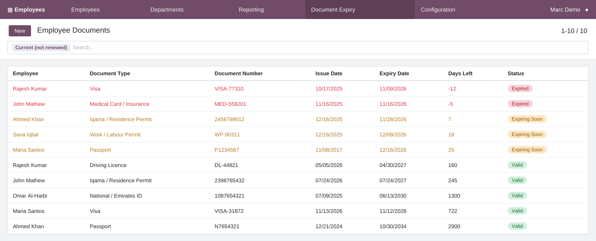
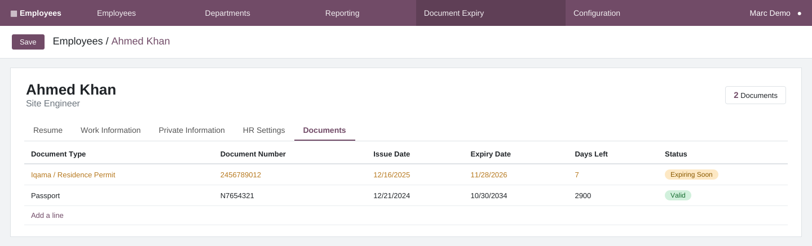
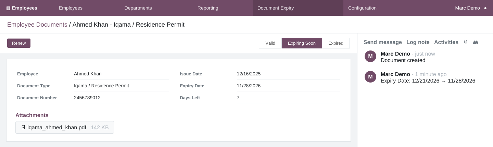
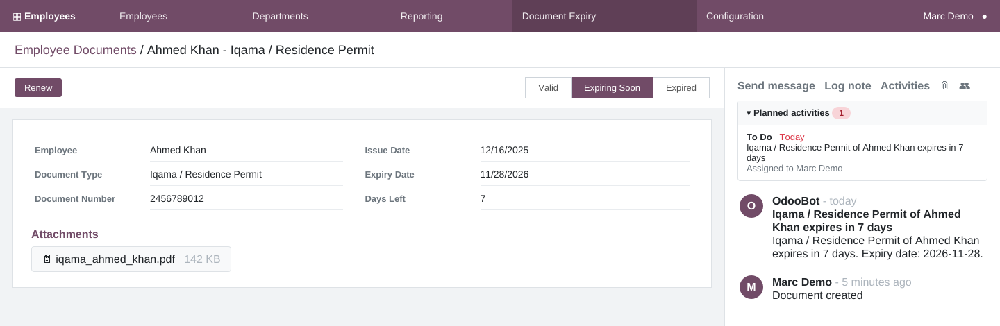
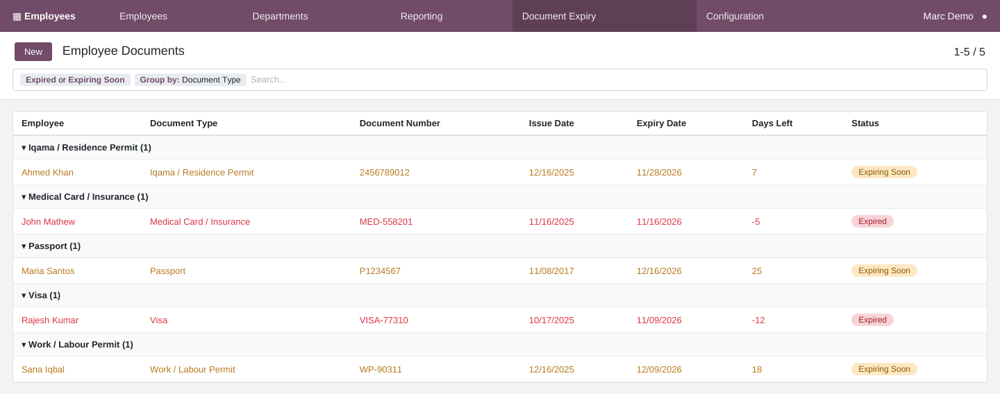
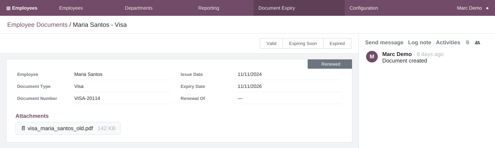

Employee Document Expiry Tracker
Track Iqama, passport, visa and permit expiry dates inside Odoo and get automatic alerts before it is too late.
The problem: an expired Iqama, work permit or visa means fines, work stoppage and failed audits.
Most companies still track these dates in Excel, and someone always forgets.
The solution: keep every document on the employee record and let Odoo remind HR 90, 60, 30 and 7 days before expiry.
Key features
- Documents tab on every employee: Iqama / residence permit, passport, visa, national or Emirates ID, medical card, driving licence, work permit and others.
- Automatic status: Valid, Expiring Soon, Expired or Renewed, with colour-coded lists.
- Automatic alerts: reminders at 90, 60, 30 and 7 days and on the expiry date, sent as an Odoo to-do activity and a chatter notification to every HR Manager.
- No duplicate alerts: each reminder is sent once per document, and restarts when the expiry date changes.
- One-click renewal: the Renew button opens a pre-filled form and keeps the old record as history.
- Scanned copies attached to each document, with change tracking in the chatter.
- Powerful filters: Expired, Expiring Soon, Valid, group by employee, document type, status or expiry month.
- Secure: only HR users can see documents, and multi-company is supported.
How it works
- HR adds a document to the employee with its number and expiry date.
- Odoo calculates the status and days left every day.
- When a document reaches an alert date, HR Managers receive a to-do and a notification.
- HR renews the document with one click and the cycle starts again.
Screenshots
1. All documents in one list, colour-coded by status

2. Documents tab on the employee form

3. Document form with attachment, status bar and chatter

4. Automatic reminder in the chatter and as a to-do

5. Filter Expired and Expiring Soon documents

6. Renew in one click and keep the history

Who is it for?
Companies with expatriate or licensed staff in Saudi Arabia, UAE, Oman, Qatar, Kuwait, Bahrain and beyond:
contracting, construction, manufacturing, security, manpower supply, hospitality and any HR team that manages visas, residence and work permits.
Technical details
- Odoo 19, Community and Enterprise
- Depends only on Employees (hr) and Discuss (mail)
- Works with a daily scheduled action, so no external service is needed
- License: OPL-1
Support
Questions or customisation requests? Contact the author through the Odoo Apps Store page.
Bug reports are handled promptly.